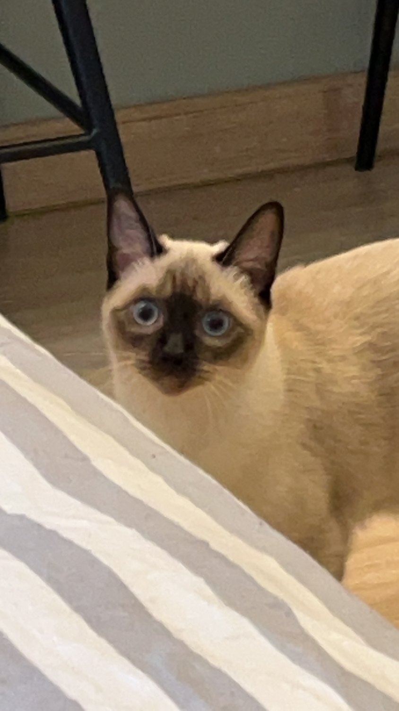
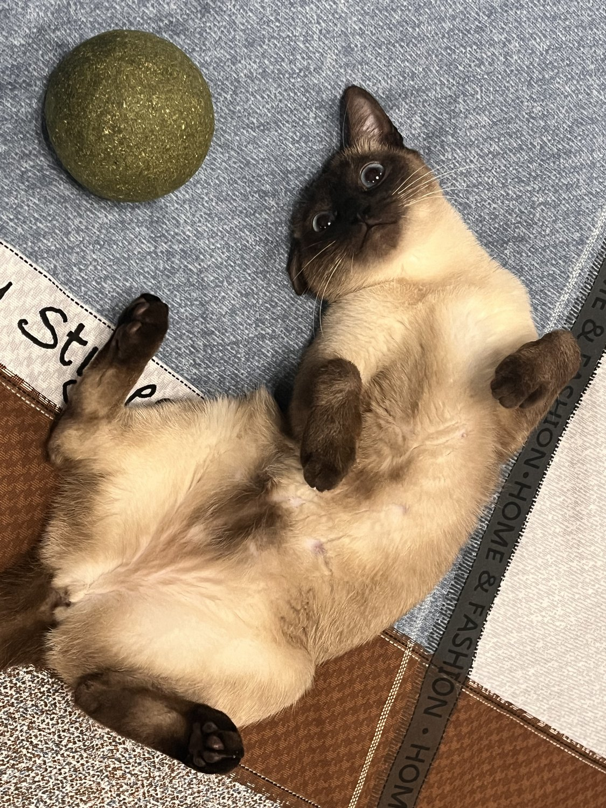
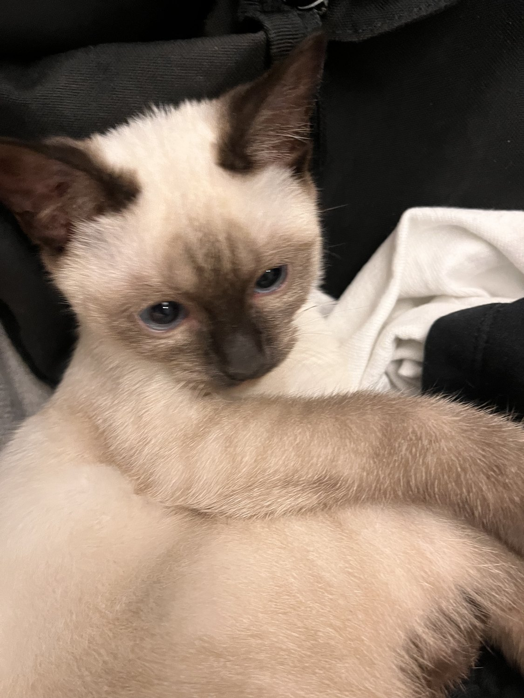

Her name is 水墨 — shuǐmò, the ink wash of Chinese brush painting. It is a fitting name for a seal-point Siamese. The body is the colour of unpainted rice paper; the face, the ears, the four paws and the tip of the tail are where the brush was loaded with ink and set down. Nobody planned the markings, and yet they look composed.
She lives back home in China with my family — Yale is too far for a cat. So this page is partly a way to keep her around: a small corner of the internet for the photos my parents send, and a reminder that she exists in time zones I’m no longer in.

水墨 has two settings. The first is a small loaf asleep in whatever spot at home someone most recently wanted to use — a desk chair, a keyboard, the exact centre of a stack of papers. The second is a brief, total commitment to chaos, usually aimed at a catnip ball that has done nothing to deserve it.
She is, as far as I can tell, completely uninterested in full-waveform inversion. Through a screen, this remains true.


Left: the catnip ball, moments before its ordeal. Right: the look she gives when she has decided dinner is late.
I miss her more than I expected to. I don’t have many hobbies — I do research, and every so often I sit down to write. This page exists mostly so that 水墨 has somewhere to live on the internet too. Updates — hers, via my mother’s camera roll, and occasionally mine — will turn up here.